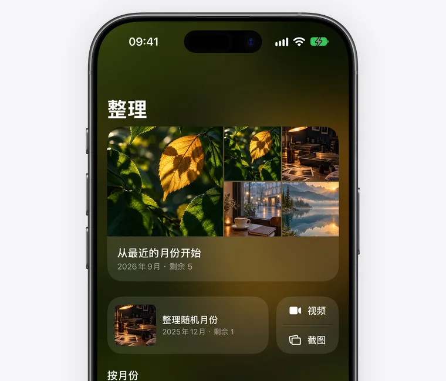
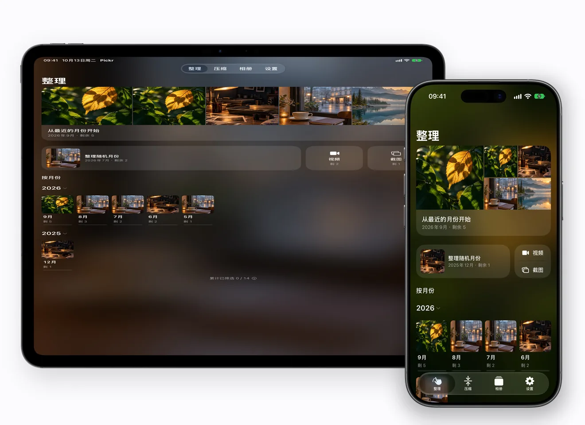
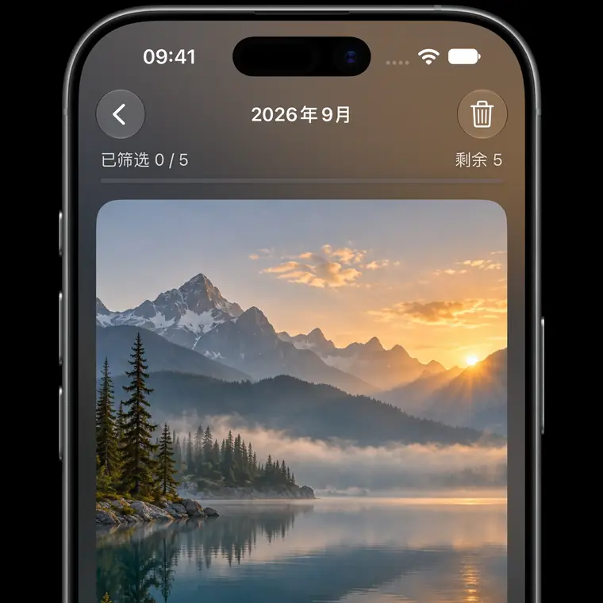
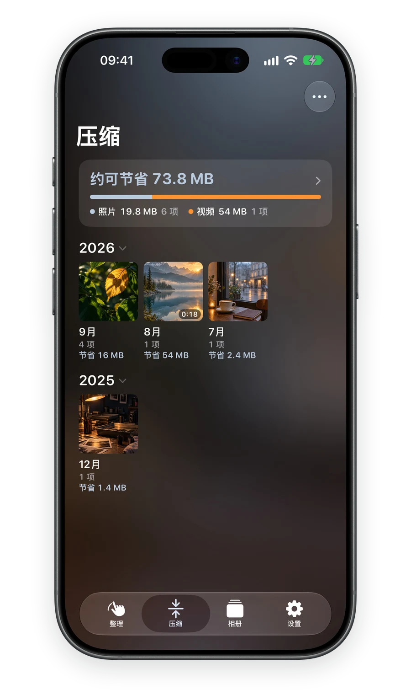
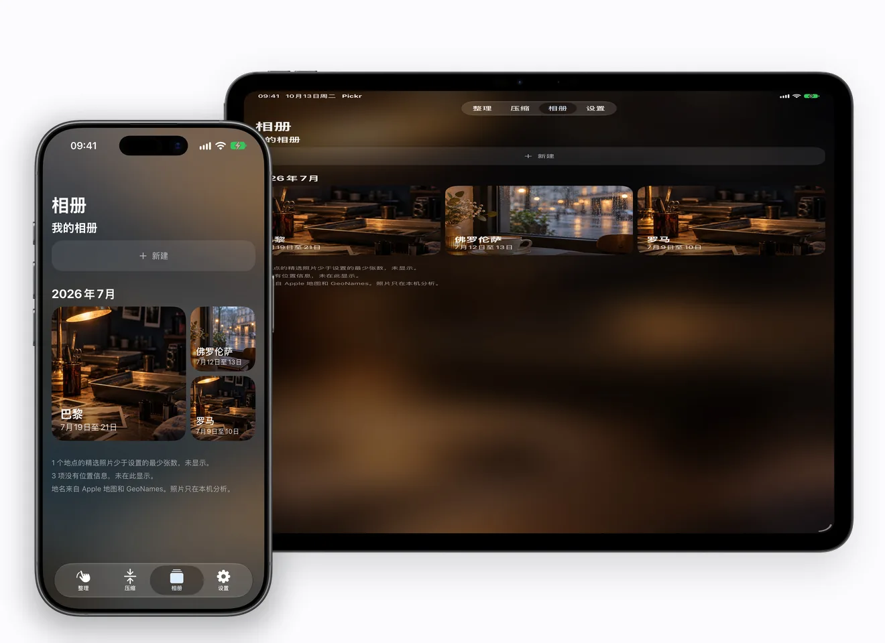
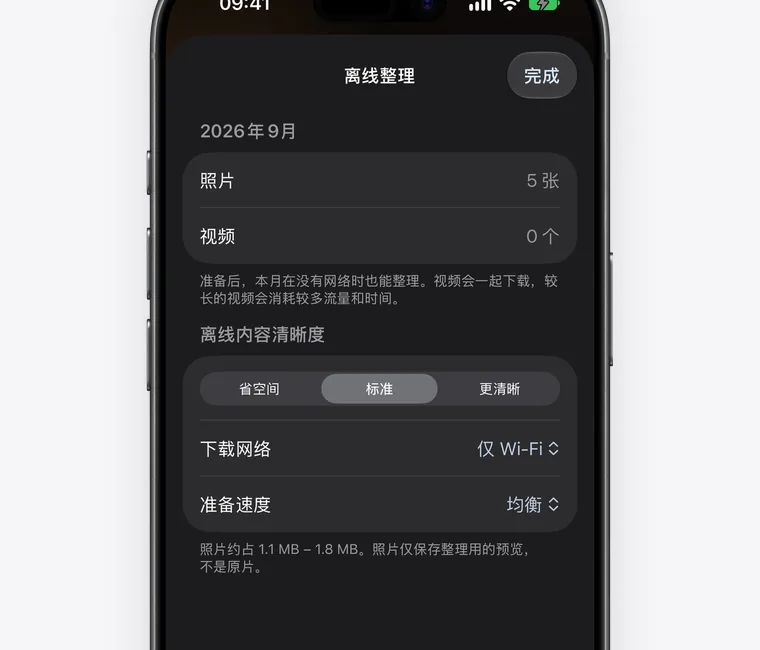

从最近的月份开始 随时停下，下次继续
支持按月份、随机月份或专项整理视频与截图。想删除的照片先进入「待确认」，由你复核后再执行，不会因为一次滑动就立即删除。


按月整理 · 整理时收集
按月份回看照片与视频，挑选想留下的，标记准备删除的。每次整理一个月，随时停下，下次继续。
支持按月份、随机月份或专项整理视频与截图。想删除的照片先进入「待确认」，由你复核后再执行，不会因为一次滑动就立即删除。

整理照片时，把想发朋友圈、留作纪念或分享给朋友的照片顺手收进本机「我的相册」，选好后一键存为系统相簿，留待分享。

连拍与同一角度的照片在本机自动归组，同屏比对对焦与表情，轻松选出想留下的那一张。
想删除的照片先放入「待确认」列表，由你摊开检查后再执行，一次滑动绝不会立即删图。
确认删除后移入系统「照片 → 最近删除」保留 30 天，期间随时可以找回原片。
照片视频压缩
查看照片与视频预计可节省的大小，选择压缩方案，完成后对比原片与压缩版，再决定是否替换。压缩版先保存，确认替换时才删除原片。

图片仅用于演示对比操作，不代表实际压缩效果。请在 App 内对比自己的照片，再决定是否替换。
只有在你确认替换时才会把原片移入系统「最近删除」；照片原有的拍摄日期、GPS 坐标、收藏状态及所属相册均完整保留，具体影响会在操作前清晰说明。
地点精选 · 离线与同步
按拍摄地点和日期浏览照片精选，重新看见旅途中的风景，也发现日常里值得留下的片刻。选好的照片可以存为「照片」App 中的相簿。

出发前准备好离线内容，可自选预览清晰度与「仅 Wi-Fi」下载；暂时没有网络也能继续整理已准备的照片与视频。会员可通过 iCloud 同步整理进度与已压缩状态，在自己的其他设备上继续整理。

关于使用与隐私
Pickr 不上传你的照片。没有注册账号，没有广告，提供月度、年度与一次性买断三种会员方案。
解答与支持
浏览、整理页筛选、相似照片对比和离线准备均可免费使用；「待确认」中的更改可免费保存 7 次，每次不限张数，失败或取消不计次数。压缩、存为相簿、地点精选筛选及 iCloud 同步需要会员。
不会。Pickr 不上传你的照片，照片文件是否同步由系统「iCloud 照片」设置决定。待确认项目、「我的相册」清单与离线内容仅保留在本设备。
想删除的照片会先进入「待确认」，由你复核后再执行，不会因为一次滑动就立即删除。即使确认删除后，系统「最近删除」仍会保留 30 天。
不会直接覆盖。压缩版会先保存，你可以对比原片与压缩版后再决定是否替换；只有在你确认替换时才删除原片，具体影响会在操作前说明。
Pickr 已在 App Store 正式上架，同时支持 iPhone 与 iPad（需 iOS / iPadOS 17.0 或更新版本；地点精选需 iOS 18 或更新版本）。
前往 App Store 免费下载 Pickr，适用于 iPhone 与 iPad